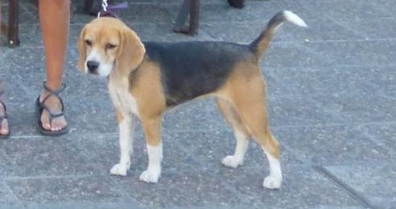

La mas grande se llama Greta
Greta nació en Trelew, pcia. de Chubut, tiene 13 años y llego a nuestro hogar en el año 2010
Su raza es de origen Ingles
- Le gusta mucho comer
- Duerme mucho
- Y ladra mucho cuando quiere salir

Greta - Olivia - Ambar
Greta nació en Trelew, pcia. de Chubut, tiene 13 años y llego a nuestro hogar en el año 2010
Su raza es de origen Ingles
Olivia también nacio en Trelew, tiene 5 años y la adoptamos en el año 2018, Oli fue mamá en el 2022.
Su raza es de origen Ingles
Ambar nació en Trelew, tiene casi 2 años y a diferencia de las otras dos ella nació en nuestro hogar en 2022, su mama es Olivia
Su raza es de origen Ingles